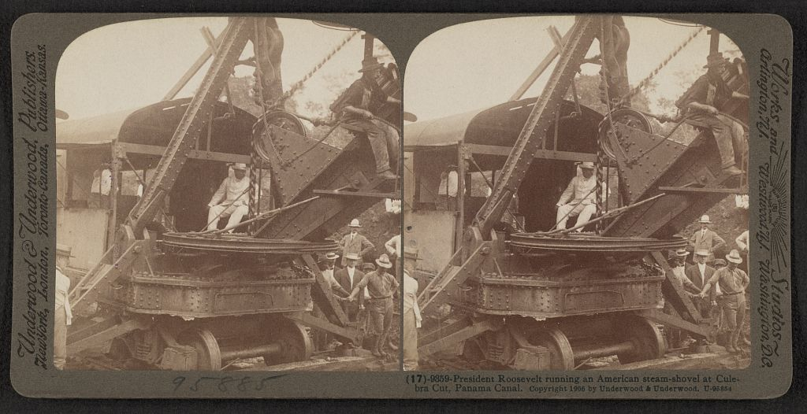

Chapter 21
The Verdict That Named Names
Seen from above, Paris on 9 March 1893 is a grey lattice of boulevards and river, and somewhere inside one courtroom the court reads the names aloud. Ferdinand de Lesseps, president of the Compagnie Universelle du Canal Interocéanique: five years. Charles de Lesseps, vice president and son: five years. Gustave Eiffel, engineer and contractor: two years. The charges were corruption and breach of trust. Ferdinand de Lesseps, eighty-seven years old, did not appear in the courtroom. His sentence was entered against a name on a register.
The Chamber of Deputies’ own inquiry report, tabled weeks earlier, contained a different list. One hundred and fifty deputies had received payments from the company’s intermediaries between 1888 and 1889. Ministers and senior civil servants had signed authorizations for the lottery bond issue that kept the company solvent through its final campaign. Journalists had been retained on monthly stipends. The report documented these transactions. The court indicted none of the deputies, none of the ministers, none of the journalists.
The verdicts produced an asymmetry. A trial that had begun as an inquiry into the Compagnie Universelle’s finances reached its decisive phase in 1893, and the verdicts handed down did not settle the question of responsibility so much as redistribute it across a widening field of actors. Read against the Chamber of Deputies’ own inquiry, the court’s findings show a deliberate narrowing of blame. A handful of company officers and intermediaries absorbed a culpability that the record itself distributes far more broadly, reaching into the ministries, the press, and the parliamentary figures who had defended the lottery bonds.
The sentences fell into a legal structure designed to individualize what the documents show as systemic. Ferdinand de Lesseps was convicted under Article 404 of the Penal Code, which addressed fraud by corporate officers. Charles de Lesseps was convicted under the same article, with an additional charge under Article 419 concerning the corruption of public officials. Eiffel’s conviction addressed his contract for the locks, signed in 1887, which the prosecution characterized as a device to extract value from a company already in collapse. The charges were crafted to fit individuals whose actions could be isolated as personal decisions. The court treated the bond authorizations, the ministry approvals, and the parliamentary votes as legitimate exercises of republican authority. Only the company’s officers had betrayed a trust.
The Compagnie Universelle had entered liquidation in February 1889. The failure is sometimes referred to as the Panama Canal Scandal, after rumors circulated that French politicians and journalists had received bribes. By 1892 it emerged that 150 French deputies had been bribed into voting for the allocation of financial aid to the Panama Canal Company, and in February 1893 Lesseps, his son Charles, and a number of others faced trial and were found guilty. The liquidation had followed the company’s final attempt to raise capital through a lottery bond issue authorized by the Chamber in 1888. That authorization had required a legislative act. The deputies who voted for it had been elected to exercise oversight. The ministers who drafted the enabling decree had been appointed to protect the public interest. The court’s verdicts did not address these acts of authorization. They addressed only the men who had received the money the authorizations produced.
Charles de Lesseps, in custody since February, faced the most specific charges. The prosecution presented documentation of payments routed through Baron Jacques de Reinach and Cornelius Herz to named deputies. The list included Antonin Proust, former minister of education, and Maurice Rouvier, minister of finance, who had received sums for ensuring favorable legislative treatment. Rouvier’s name appeared in the inquiry’s transcript. He had negotiated the bond authorization through the Chamber’s finance commission. The court did not indict Rouvier. It did not indict Proust. The intermediaries — Reinach, who died in November 1892 before testimony, and Herz, who had fled to England — were named in the proceedings as conduits, not as principals. Reinach’s death and Herz’s absence left the payment chain narratively incomplete. The court closed the gap by convicting the man who had authorized the payments: Charles de Lesseps.
The mechanism of containment operated through a distinction the court drew between personal profit and systemic authorization. Charles de Lesseps was convicted because he had signed the payment orders to Reinach and Herz. The deputies who received the money were not convicted because receiving it was not, under the court’s reading, a criminal act distinct from the ordinary practice of political life.
The ministers who approved the bond issue were not convicted because their approvals were acts of state. The court’s logic separated the company’s officers, who had acted in a private capacity, from the public officials, who had acted in an official one. The result was that every act of authorization was treated as legitimate and every act of payment was treated as corrupt.
The ledger turn — the moment when financial accounting displaced engineering judgment as the measure by which the project understood its own position — was absorbed by the Republic as a political lesson about corruption rather than as a structural lesson about how financial instruments had become the project’s operational substance.
Gustave Eiffel’s case demonstrated the same logic from a different angle. Eiffel had contracted in 1887 to build the locks for a canal that the company’s own technical staff had concluded could not be completed as a sea-level waterway. The contract was signed after the company had already abandoned the sea-level plan adopted at the 1879 congress. Eiffel’s locks were for a lock canal that the company could not fund to completion. The prosecution characterized the contract as a breach of trust: Eiffel had accepted a commission he knew the company could not pay. The court convicted him.
The verdict did not address the engineering question of whether locks were technically appropriate. It did not address the financial question of whether the company’s directors had known, when they signed the contract, that no further capital would be forthcoming. It addressed only Eiffel’s personal decision to accept the terms.
The systemic failure — a company signing contracts it could not honor, for a design it had not validated, with money it did not have — was reduced to one man’s judgment.
Ferdinand de Lesseps’s conviction was the most symbolic and the most hollow. He had not visited the isthmus since 1880. He had not signed the company’s financial documents since the mid-1880s, when his son and the board had assumed operational control. His conviction rested on his presidency — his name on the letterhead, his authority as the builder of Suez, his public guarantees that the canal would be completed. The court convicted him for the confidence he had sold. It did not convict the financial press that had amplified that confidence, the subscribers who had bought it, or the legislators who had staked public credit on it. The five-year sentence was entered on the register. Ferdinand de Lesseps remained at his estate in La Chesnaye. He did not go to prison. The sentence existed as a legal fact, not as a physical reality.
The Chamber of Deputies’ inquiry report, when placed beside the court’s verdicts, reveals the specific mechanism by which the Republic narrowed the field of blame. The inquiry documented the flow of money from the company’s treasury through intermediaries to parliamentarians. It named the deputies. It recorded the sums. It established dates.
The report’s findings were not in dispute. The court treated those findings as evidence of the company’s corruption, not as evidence of the Chamber’s. The deputies who received payments were characterized as victims of the company’s inducements, not as participants in a system of exchange. The ministers who approved the bond issue were characterized as having been misled by the company’s representations, not as having failed to exercise the oversight their offices required. The court’s framing converted the Chamber’s own documented complicity into evidence for the prosecution of the company’s officers. The Republic’s machinery investigated itself and found itself clean.
The doubt routing that had characterized the company’s operational life — the pattern by which engineering warnings, mortality data, and ledger signals were produced at the point of work but deflected before reaching the decision center — now appeared in the judicial record as a routing of blame. The engineers who had warned of the Chagres River, the medical staff who had recorded the death toll, the accountants who had flagged the discrepancy between capital raised and earth moved — all of their documentation entered the trial as evidence against the directors. The directors were convicted for not acting on warnings the system had been designed to suppress. The system itself was not placed on trial.
The Chamber’s inquiry had documented the legislative authorizations, the ministerial decrees, and the press campaigns that had sustained the company through its final years. None of these acts of state were treated as indictable.
The court’s verdicts named names. The names they named were the names the Republic was willing to sacrifice.
The counter-explanation — that the company failed because the isthmus itself exceeded what 1880s engineering and medicine could reliably accomplish — was present in the trial record but not addressed by the verdicts. The defense argued that the sea-level plan adopted at the 1879 congress was technically infeasible, that the Chagres River could not be controlled with available technology, and that the mortality from yellow fever and malaria had made the workforce unsustainable. These claims were supported by the company’s own engineering reports, which had recommended a lock canal as early as 1884.
The court did not contest these claims. It did not need to. The charges were not about engineering failure. They were about financial misconduct and breach of trust.
The engineering record entered the trial as context, not as causation. The verdicts treated the technical failure as a misfortune the company had exploited, not as a constraint the company had failed to understand. This framing allowed the court to convict the directors for dishonesty without addressing the question of whether any management, however honest, could have completed the project as designed.
The engineering impossibility was acknowledged and set aside. The financial corruption was prosecuted and punished.
The consequences for each party followed the court’s logic of containment. Ferdinand de Lesseps received a sentence he would never serve. He died in 1894. Charles de Lesseps served part of his sentence and was released in 1895. Eiffel’s conviction was overturned on appeal in 1893 on procedural grounds, though the decision did not fully clear his name. The intermediaries were dead or abroad. The deputies were re-elected. The ministers resumed their careers. The press continued to publish. The Chamber of Deputies passed a vote of confidence in the government during the trial. The Republic’s institutions absorbed the verdicts as a demonstration that the system worked: crimes had been identified, criminals had been punished, and the public interest had been vindicated. The verdicts performed accountability without requiring reform.
The financial structures that had enabled the disaster remained intact. The lottery bond mechanism, which had allowed the company to raise capital against future drawings rather than against completed work, had been authorized by the Chamber and approved by the ministry. It was not modified. The regulatory framework that had allowed a private company to sell bonds to the public without independent verification of its engineering progress was not reformed. The press subsidy system, by which companies retained journalists on monthly stipends to shape coverage, was not dismantled. The legislative oversight process that had allowed deputies to vote on bond authorizations while receiving payments from the company was not restructured. The court’s verdicts closed the legal file. They left the infrastructure of confidence — the bond issues, the press campaigns, the parliamentary approvals — exactly as it had been.
The liquidation inventory of 1894 would list the French excavations at Culebra and along the Chagres as assets to be sold. The American assessment of 1901 would treat those excavations as the starting point for a new project. The legal reckoning of 1893 had named the men who had signed the contracts and authorized the payments. It had not named the system that had made the contracts possible and the payments necessary. The Republic had absorbed the failure as a national lesson about individual corruption. It had not absorbed it as a lesson about institutional design. The court’s register recorded the convictions. The Chamber’s register recorded the votes. The two documents, read together, showed a Republic that had investigated its own machinery and concluded that the machinery was sound. The operators had been faulty. The machine was fine.

On 15 March 1893, six days after the verdicts, the Chamber of Deputies voted to approve the government’s budget for the coming fiscal year. The vote included appropriations for public works. The budget process did not include a review of the regulatory framework that had governed the Compagnie Universelle’s bond issues. The deputies voted in the same chamber, under the same rules, with the same oversight procedures that had authorized the lottery bonds in 1888. The legal file was closed. The political and financial structures that had enabled the disaster remained intact, shaping the Republic’s future capacity for grand projects. The machine was fine.